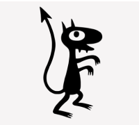

Дисконт в теории игр
В теории игр, дисконт — текущая стоимость денежной единицы
будущего периода, умноженная на вероятность повторения
игры для игр с неизвестным числом повторений.
Залоговый дисконт
Разница между реальной рыночной стоимостью залогового имущества и его
залоговой стоимостью, используемой для определения суммы выдаваемого
банком кредита.
"Футурама" -Бендер
— Я изучил ваше винное меню и выбрал: 71 Хобо де Лайв, 56 Шото Партель и 66 Тендер Шельц.
— Прекрасный выбор, сэр.
— Смешайте все в одном ведре.
— Прекрасный выбор, сэр.
— Смешайте все в одном ведре.
Цитата из "Разочарование"
Развлечение — это всего лишь инструмент усмирения масс, который ведёт к загниванию и полному
коллапсу цивилизации. Давайте похлопаем!
Люцик "Разочарование"
Его облик, по мнению окружающих, похож на кошачий. Поначалу ему это не
нравилось, но потом он привык, вжившись в роль кота.
Люцик "Разочарование"
